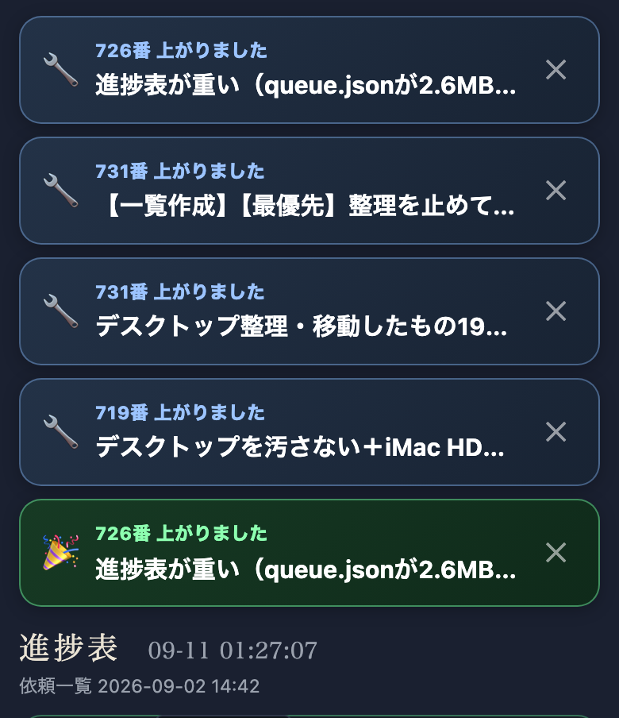

tools/auto_launcher.pyが成功かつURL付きの完了のたびにstatus/new_arrivals.jsonへ1件積み、進捗表(index.html)が60秒ごとにこれをポーリングして、まだ見ていない分だけ画面の一番上（タイトルより上）に「🎉／🔧 ◯番 上がりました：題名」のカードで出す。タップで実物URLへ直行。一度出したものは端末のlocalStorageで既読にし、二度と出さない。あわせて、715番の憲法遵守点検に11個目の項目「未報告の完了が溜まっていないか」を追加し、Dispatchの会話開始時の読み上げ手順が守られているかも毎日機械で見張るようにした。
